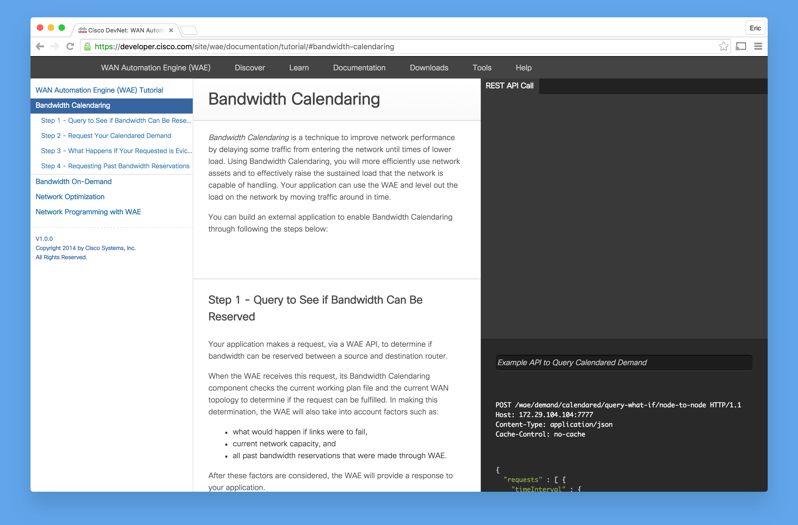
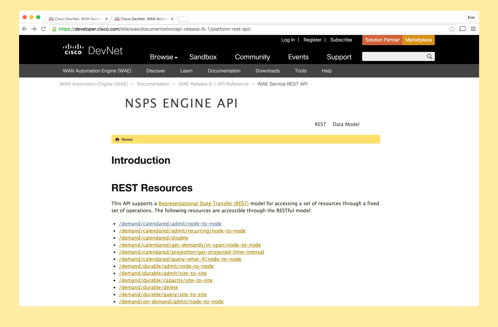

Cisco×WAE
WAE API Engineer
In my first position at Cisco I worked on creating and documenting REST API's in the Wide Area Network (WAN) Orchestration product group. The WAN Automation Engine (WAE) is a set of web API's designed to provide bandwidth orchestration capability for a Wide Area Network in the Service Provider environment.
Our API's were designed for use by a developer working in an organization that provides network services. Much of my job was figuring out the best way to deliver these API's to them and make them as easy to use as possible.
I approached designing the best experience for these developers by:
01
Creating a public-facing tutorial for using our API's. Designed and implemented a web page to do so. See the full web page at developer.cisco.com/site/wae/documentation/tutorial/
02
Integrating an API documentation plug-in into our build. This allowed for more streamlined documentation to be delivered to our developers.
External Links
UI Engineer
In my second role at Cisco I worked as a UI Engineer. The project I worked on was a visualization tool for the WAE web API's that I helped to create in my previous position. This role involved utilized HTML, CSS and Javascript–more specifically javascript libraries/frameworks including NodeJS, BackboneJS & HighchartsJS.
In this role I continued to try to give the best experience to these developers that would be using the application. I put a lot of energy in particular into working on this configuration page that you see below.
Me and my team were finding that developers that did not have a complete knowledge of our ecosystem had a hard time setting up our application. As someone who had worked on the much of the documentation and creation of the API's I empathized with these developers and strived to make that information as visible as possible in the application. I did so by:
- Creating a comprehensive "Help" section of the site.
- Creating tooltip UI's for assisting users in the interface itself.